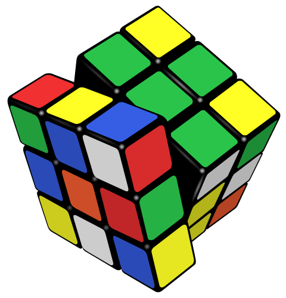

Nature Walking

Basketball

Assembling Parts
Abdi Hassan:
132 Hartwood Cir Columbia, SC 29212
803 260 1982 ·
ahassan8844@gmail.com
Nature Walking
Basketball
Assembling Parts
SUMMARY:
I am a 25 years old individual who is now looking for a job to call a career. A place that I can stay and work for many many years. Now that I have worked and experienced the workplace. My job history is a short and doesn't have much to look into. That is due to my personal history throughout life. Let's just that I was young mentally. I wasnt the type of teenager to work at a restuarant. It would've been a bit too much for me to handle at the time. In my early 20s, I pretty much just did doordash for sometime. I understand that's not a real job experience. The longest job experience I have had would be at Shakespeare. Which was 2 months Now I know 2 months is short for having a job, but for me that was a great experience. Only after leaving did I realize the importance of a job. I am actually proud of myself for staying that long. After spending some time away from work and school, I finally understand where I want to go in life and what I want to do. Sometimes you just need a time to self reflect and understand yourself. Now being 25, I know where and what. My main goal is to perfect my coding and eventually become a pro Full Stack Developer at a company or do some freelance web development.
EDUCATION:
- Richland One Middle College - Columbia SC
- High School Diploma: Graduated in 2016
- Claflin University: Computer Science : 2016-2018
- Midlands Technical College: Computer Science: 2018-2020
Skills:
WORK HISTORY:
- Youtube Content Creator: 2017 - 2020
- Doordash: 2021 - 2023
- Shakespeare: April 2023 - June 2023